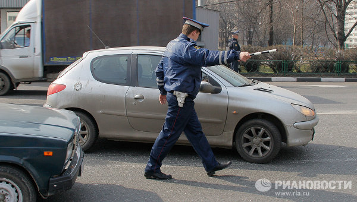
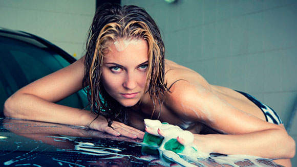
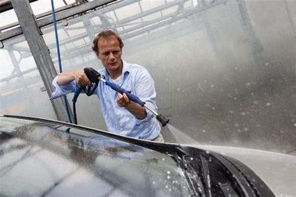
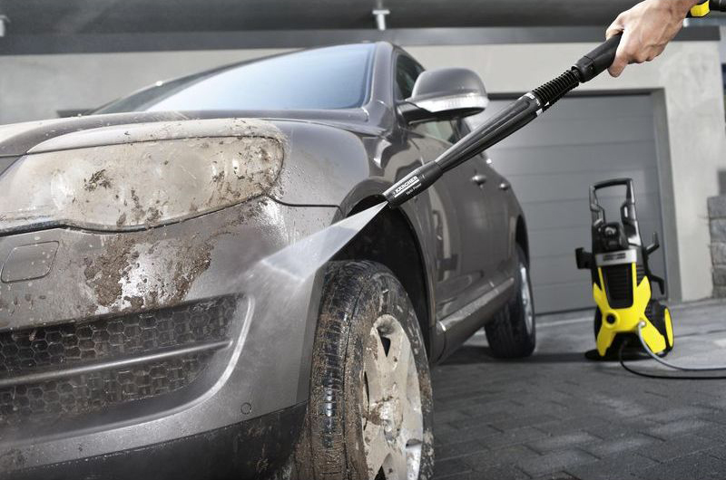
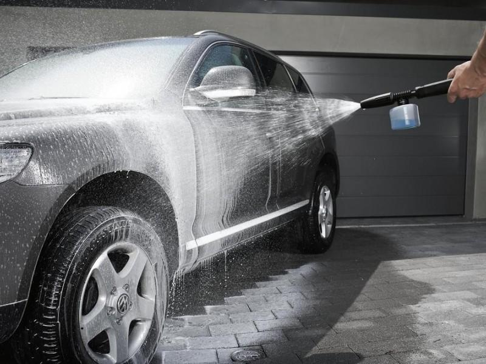

Мойка кузова, салона
Мойка автомобиля необходима по нескольким причинам. Одной из главных является эстетический вид Вашей машины. Даже новое транспортное средство, будучи покрыто слоем пыли или грязи, не выглядит привлекательным, а ведь по машине зачастую судят о водителе.
Не стоит забывать и о том, что работник ППС имеет право предъявить претензию автовладельцу, номера транспортного средства которого неразличимы с установленного расстояния. Излишнее внимание стражей порядка редко вызывает приятые эмоции. Третьей причиной, говорящей о необходимости мойки авто, является забота о его лакокрасочном покрытии – при постоянном уходе оно сохраняется значительно дольше.
Существует несколько способов вымыть автомобиль. Например, можно сделать это вручную. Вы готовы потратить время, нервы и силы? Тогда следует найти специальное место и обеспечить большое количество воды. После этого, вооружившись губкой, мягкой тканью, автомобильным шампунем, пятновыводителем и пылесосом, Вы, за несколько часов выматывающего труда, несколько улучшите вид своего авто… ухудшив при этом свой собственный. Стоит ли незначительная экономия таких усилий?
Значительно более удобно довериться профессионалам. Бесконтактная мойка Вашего авто проводится с помощью специального аппарата, подающего воду по высоким давлением и идеально подходящего для удаления мусора и грязи. После этого поверхность автомобиля покрывается специальным шампунем. Через некоторое время шампунь смывают, а излишнюю влагу удаляют.
Преимуществ профессиональной мойки машины в нашей компании много. Не страдает ЛКП – очистка Вашего авто будет проведена максимально аккуратно и бережно. Будут тщательно промыты все труднодоступные места (например, пространство около колес и порожки) – опытные мойщики точно знают, где именно скапливается грязь.
Ещё одним способом очистки кузова Вашего автомобиля является контактная мойка. В этом случае автомобиль некоторое время проводит в специальном отсеке, где, с применением автохимии, его обрабатывают вращающиеся на высокой скорости ворсистые щётки. После этого машина ополаскивается и сушится потоками тёплого воздуха.

К преимуществам данного метода относится низкая стоимость и быстрота проведения процедуры. Нужно отметить: из-за небольших расценок на контактную мойку, как правило, скапливаются серьёзные очереди.
Также рекомендуем
Наномойка Антидождь Инновационный автошампунь Полировка «Жидкое стекло»